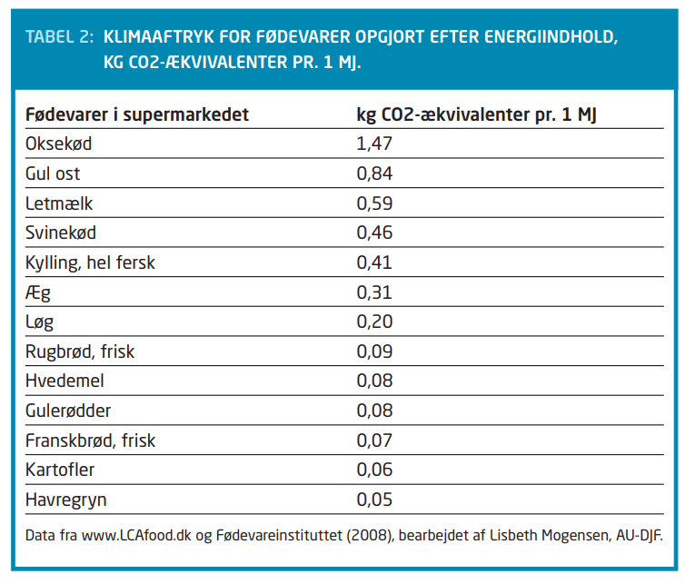

Fødevare
i EU udgør produktionen af fødevare omkring 20-30% af den samlede CO2 udledning. Dette skyldes i sær kød produktionen. Dette skyldes mængden af ressourcer der skal til for at opdrætte dyr så som kvæg og lam. Landbrugsdyrene er ansvarelige for 18% af verdensdrivhusgas udledning. Tabellen nedenfor giver et overblik over hvor meget CO2 de forskellige fødvare påvirker klimaet i forhold til hinanden.
 Ovenstående graf er fremstillet ud fra følgende kilde:www.etiskraad.dk/fødevare
Ved at formindske ens kødforbrug, gør man efterspørgelsen på kød mindre. En grønnere kost betyder et grønnere Danmark.
Ovenstående graf er fremstillet ud fra følgende kilde:www.etiskraad.dk/fødevare
Ved at formindske ens kødforbrug, gør man efterspørgelsen på kød mindre. En grønnere kost betyder et grønnere Danmark.
Danmarks kødforbrug
Danskere er et af de lande i verden, der spiser allermest kød per indbygger. Danskernes kødforbrug er steget med over 70% siden 1980 ifølge internationale statistik. På model 1 kan man se en udvikling af årligt kødforbrug pr. indbygger, som er udarbejdet af ”World Resources Institute”. Det fremgår tydeligt, som tidligere beskrevet, hvor ekstremt Danmarks forbrug af kød er steget.
 Ovenstående billede og tekst er fremstillet ud fra følgende kilde:Fødevarernes andel af klimabelastningen
Kød har en meget højere CO2 udledning i forhold til brød eller grøntsager. Det er grunden til at fødevareproduktionen og landbruget spiller en stor del indenfor udledning af drivhusgasser.
Det er ikke noget politikerne kan gøre så meget ved, da det typisk kræver folkelig opbakning at lave hårde beslutninger såsom noget der vedrører kødafgifter eller bilafgifter. Denne folkelig opbakning kan være svær at opnå da effekterne for klimaforandringerne først kan indtræffe meget senere (årtier til århundreder). Dermed kan en politikeres forslag vedrørende klima afgifter typisk ende som en upopulær holdning i stedet for.
Derudover importerer vi dansker enorme mængder af foderstoffer fra Sydamerika som proteinfoder til grise, køer og fjerkræ. Denne proces er knyttet til store udledninger af CO2, da man bliver nødt til at fælde store områder af skov, for at kunne skaffe nye områder til dyrkning af sojabønner.
Men hvorfor er det så dårligt at spise kød? Kød, specielt oksekød er en af de fødevarer der udleder allermest CO2. Det er også grunden til at det bliver nævnt i ”Et spørgsmål om klima”. Oksekød’s udledning af CO2 fra produktion af 1 kg er så stort, at det svarer til 150 km kørsel i bil. Vi har inkluderet et skema der beskriver de forskellige fødevarers udledning af CO2.
Grunden til at CO2 udledningen er så høj i ovenstående tabel er, at man har taget højde for hvor meget køerne bøvser og prutter, det store forbrug af gødning til at producere foderet og dyrkning af fx sojabønner som foderafgrøder, der som nævnt tidligere bidrager til fældning af tropisk regnskov.
Ovenstående billede og tekst er fremstillet ud fra følgende kilde:Fødevarernes andel af klimabelastningen
Kød har en meget højere CO2 udledning i forhold til brød eller grøntsager. Det er grunden til at fødevareproduktionen og landbruget spiller en stor del indenfor udledning af drivhusgasser.
Det er ikke noget politikerne kan gøre så meget ved, da det typisk kræver folkelig opbakning at lave hårde beslutninger såsom noget der vedrører kødafgifter eller bilafgifter. Denne folkelig opbakning kan være svær at opnå da effekterne for klimaforandringerne først kan indtræffe meget senere (årtier til århundreder). Dermed kan en politikeres forslag vedrørende klima afgifter typisk ende som en upopulær holdning i stedet for.
Derudover importerer vi dansker enorme mængder af foderstoffer fra Sydamerika som proteinfoder til grise, køer og fjerkræ. Denne proces er knyttet til store udledninger af CO2, da man bliver nødt til at fælde store områder af skov, for at kunne skaffe nye områder til dyrkning af sojabønner.
Men hvorfor er det så dårligt at spise kød? Kød, specielt oksekød er en af de fødevarer der udleder allermest CO2. Det er også grunden til at det bliver nævnt i ”Et spørgsmål om klima”. Oksekød’s udledning af CO2 fra produktion af 1 kg er så stort, at det svarer til 150 km kørsel i bil. Vi har inkluderet et skema der beskriver de forskellige fødevarers udledning af CO2.
Grunden til at CO2 udledningen er så høj i ovenstående tabel er, at man har taget højde for hvor meget køerne bøvser og prutter, det store forbrug af gødning til at producere foderet og dyrkning af fx sojabønner som foderafgrøder, der som nævnt tidligere bidrager til fældning af tropisk regnskov.

Ovenstående billede og tekst er fremstillet ud fra følgende kilde:Fødevarernes andel af klimabelastningen
Hvad kan du gøre?
Dermed ligger der et stort ansvar på forbrugeren, hvis man gerne vil gøre en smule for klimaet. Vil man gerne opnå en mere klimavenlig kost, så skal man gøre følgende:
-
• Ændret sammensætning af kosten: mindre kød og mejeriprodukter og mere fra den lavere ende af fødekæden
- • Frilandsgrøntsager fra sæsonen (mindre opbevaring, opvarming og transport – vælg sæsonens danske produkter hvis muligt, ellers sæsonens produkter fra udlandet)
-
• Undgå produkter, der er importeret via fly, og produkter fra drivhuse
-
• Vælg produkter, der er mindre afhængig af køling (mere robuste fødevarer, hyppigere indkøb hos den lokale købmand)
-
• Reducer fødevarespildet (spis hvad der indkøbes, og hurtigt efter at det er købt)
-
• Klimavenlig tilberedning (lav mad til flere dage af gangen, brug ovnen mindre)
Ovenstående fakta er fra følgende kilde:Fødevarernes andel af klimabelastningen